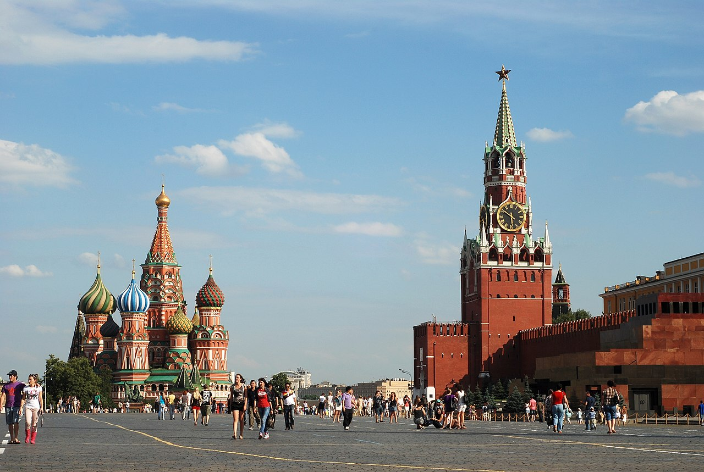
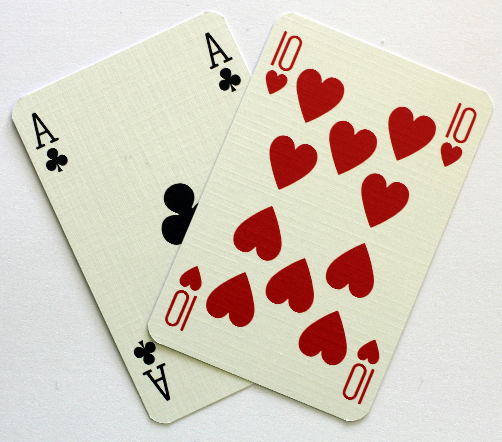
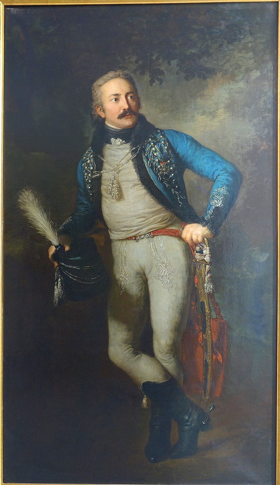
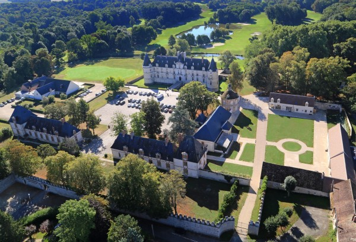

투자와 투기의 차이 - 나폴레옹도 피하지 못한 함정
게시: 2021-03-22T06:30:14+09:00
9월~10월 간, 부하들이 여우털과 담비가죽을 찾아 난리를 피우는 동안, 오지 않는 러시아 측의 평화 교섭단을 기다리던 나폴레옹의 일상은 무료하기 짝이 없었습니다. 그가 주로 했던 일은 크라스나야 (Krasnaya) 광장에서 열병식을 자주 하고 보로디노 전투에서 공훈을 세운 장교와 병사들에게 레종 도뇌르 훈장을 수여하는 것 정도였습니다. 그는 크레믈린에서 알렉산드르가 쓰던 침실을 그대로 썼는데, 다만 알렉산드르의 호화로운 침대를 쓰지 않고 그가 원정시에 늘 자던 철제 야전용 침대를 알렉산드르의 침실에 들여놓고 거기서 잤습니다.

(크라스나야 (Krasnaya) 광장이 바로 모스크바의 붉은 광장입니다. 우리에게는 테트리스 궁전으로 알려진 저 왼쪽 멀리 보이는 건물의 정식 이름은 성 바실리 성당(St Basil Cathedral)입니다.) 그것말고는 딱히 할 일이 많지 않았습니다. 앙리 벨(Henri Beyle) 즉 젊은 스탕달도 언급했듯이, 나폴레옹은 그냥 천재였을 뿐 유희의 인간이 아니었기 때문에 이렇게 기다리는 것 외엔 할 것이 없는 무료한 나날에 딱히 할 것이 없었습니다. 특히 저녁이 되면 더욱 그랬습니다. 애처가였던 외젠(Eugene)이 9월 21일 그의 와이프에게 보낸 편지를 보면 이렇게 되어 있습니다. "어제 저녁은 황제 폐하와 함께 보냈어. 시간을 때우려고 벵-떼-엉(vingt-et-un) 게임을 했지. 여긴 뭐 하나 재미난 것이 없기 때문에 앞으로 저녁 시간이 아주 길어질 것 같아. 심지어 당구대조차 없다니까."

(외젠과 나폴레옹이 했다는 vingt-et-un은 영어로는 글자 그대로 twenty-one, 즉 21입니다. 이건 18세기에 프랑스에서 유행한 카드 놀이인데, 곧 영국과 독일로 퍼져나가 유럽 대륙에서 vingt-un이라는 이름으로 유행했습니다. 21점을 먼저 내는 측이 이기는 것이라서 이런 이름이 붙었는데, 에이스는 1점 또는 11점이 되기 때문에 사진 속의 카드패가 승리의 21점을 뜻합니다. 이 게임이 19세기 말에 미국으로 건너가서 블랙잭이 되었다고 합니다.) 이때 즈음의 나폴레옹은 확실히 뭔가 좀 나사가 풀린 듯 한 모습을 보여주긴 했습니다. 보로디노 전투에서도 건강 상태가 좋지 않아서 제대로 된 판단을 못 내린 것 같았는데, 모스크바에서도 그는 확실히 활동량이 눈에 띄게 적었습니다. 그는 부하들로부터 이런저런 보고서를 받아 읽으며 그랑다르메의 현황을 파악하고 있었고, 크라스나야 광장에서 열병식을 하며 병사들의 사기를 살폈습니다. 그러나 정작 병사들의 숙소와 숙영지를 직접 돌아다니며 점검하지는 않았습니다. 그로 인해 나폴레옹은 부하들이 그에게 보여주고 싶은 것만 보았습니다. 결국 나폴레옹의 판단 착오는 그의 부하들의 잘못이었을까요? 아닙니다. 부하들은 나폴레옹이 보고 싶어하는 것만을 보여줄 수 밖에 없었습니다. 자신이 보고 싶어하지 않는 것을 말하는 부하들은 면박을 당하기 일쑤였기 때문이었습니다. 심지어 그의 가장 가까운 인척이자 부하들 중 가장 지위가 높았던 나폴리 왕 뮈라가 올리는 직언조차도 나폴레옹은 받아들이지 않았습니다. 당시 모스크바 안팎에 주둔하고 있던 부대들은 그나마 먹고 자는 사정이 꽤 괜찮은 편이었습니다. 그러나 타루티노에 주둔한 쿠투조프의 러시아 야전군과 대치하고 있던 뮈라의 부대는 그야말로 죽을 맛이었습니다. 먹을 것도 없고 날이 점점 쌀쌀해지는데 머리 위를 덮을 지붕은 커녕 천막조차 없는 상황이었기 때문이었습니다. 특히 군마들의 사정은 최악이었습니다. 말은 의외로 사람보다 연약한 가축이라서 마굿간이 아닌 야외에서 사료도 제대로 먹이지 않고 험하게 굴리면 금새 병에 걸리기 일쑤였습니다. 그로 인해, 병사들의 비전투 손실도 있었지만 특히 군마의 수는 급속도로 줄어들었습니다. 사단이니 연대니 하는 부대 단위로 이야기를 하면 거창한 군세가 있는 것 같았지만, 10월 중순 경 프랑스군 기병대는 깜짝 놀랄 수준으로 줄어들어 있었습니다. 가령 11개 연대로 구성된 제3 기병군단에 남아있는 말은 고작 700마리 밖에 없었습니다. 제1 엽기병 연대에는 최근 프랑스에서 증원되어온 말을 받았음에도 고작 58기의 기병만 동원할 수 있었습니다. 제2 흉갑기병 연대의 각 중대들은 정상적이라면 130기의 기병들로 구성되었으나, 이때 즈음에는 18기~24기가 전부였습니다. 틸만(Thielmann) 장군의 작센 기병 여단에는 50기의 기병 밖에 남아있지 않았습니다.

(틸만(Johann von Thielmann) 장군입니다. 드레스덴 출신의 작센 군인인 그는 1806년 예나 전투 때는 프로이센 편에서 싸웠습니다. 예나의 대패 이후, 작센 대공은 그를 평화 사절로 삼아 나폴레옹에게 보냈는데, 이때 나폴레옹을 처음 만나본 틸만은 그만 나폴레옹의 매력에 흠뻑 빠져 누구보다 열렬한 나폴레옹의 숭배자가 되었다고 합니다. 그는 1809년 오스트리아와의 전쟁 때도 나폴레옹 편에 서서 잘 싸웠고, 특히 보로디노 전투에서는 용맹을 발휘한 덕분에 나폴레옹의 눈에 띄여 그의 개인 수행원으로 발탁되기도 했습니다. 그러나 결국 1814년에는 대불 동맹군 편에 서서 싸웠고, 워털루 때도 블뤼허와 함께 그루시를 유인해내는 역할을 수행했습니다.) 상황이 이 모양이다보니 10월 초에 뮈라는 참모인 로세티(Rossetti) 장군을 직접 모스크바로 보내 나폴레옹에게 기병대의 상태와 그 열악한 보급 상황에 대해 호소했습니다. 그러나 나폴레옹은 '러시아군은 훨씬 더 열악한 상태이며 싸울 형편이 못된다'라며 뮈라의 보고를 엄살로 무시해버렸습니다. 그는 답답해하는 로세티에게 그랑다르메의 스태미너와 사기가 최고조라는 실제 상황과는 거리가 먼 태평한 소리를 했습니다. 뮈라는 자신의 말도 먹히지 않자 답답했던 뮈라는 나폴레옹의 참모장 베르티에의 부하 벨리아르(Belliard) 장군에게 편지를 써서 '어떻게든 황제 폐하가 진실을 볼 수 있도록 설득해달라'고 통사정을 했습니다. 하지만 다 소용없었습니다. 나폴레옹은 확실히 전성기의 모습이 아니었습니다. 그는 크레믈린 궁전의 침실 창문가에 항상 두 개의 촛불을 켜놓도록 했는데, 이는 궁전 마당을 오가는 보초병들에게 그들의 황제가 밤에도 자지 않고 그들을 위해 열심히 일하고 있다는 것을 보여주기 위해서였습니다. 그러나 정작 그는 상황을 제대로 파악하지도 못했고, 따라서 제대로 된 판단을 내리지도 못했습니다. 그는 군마들이 픽픽 쓰러지고 있다는 보고를 받고는 프랑스와 독일 지방에서 14,000 마리의 군마를 러시아로 보내도록 지시했고, 보급이 부족하다는 보고에 대해서는 북동부 이탈리아 지방인 트리에스테(Trieste)에서 많은 양의 쌀을 모스크바로 보내도록 지시했습니다. 모두 상황에 맞지 않는 명령이었습니다. 현재 있는 말들이 빠른 속도로 소진되고 있는 것은 군마들에게 먹일 사료가 없고 거친 벌판에서 대책도 없이 노숙을 시키고 있기 때문이었습니다. 거기에 새로운 말들을 잔뜩 데려온다면 가뜩이나 열악한 사료 사정이 더 나빠질 뿐이었습니다. 게다가 트리에스테에서 쌀을 싣고 오라는 명령은 자신이 여기까지 오면서 직접 본 러시아 내륙 수송로의 열악함을 잊은 듯한 지시였습니다. 지금이라도 병력을 빼서 보급이 가능한 후방으로 후퇴를 해야 하는 시점이었습니다. 그러나 나폴레옹은 반대로 병력과 물자를 모스크바로 불러모으고 있었습니다. 나폴레옹은 크레믈린 궁전에서 쓴 마리-루이즈에게 보내는 편지에서 이번 겨울 전에 파리로 돌아가지 못한다면 마리-루이즈가 폴란드로 와서 거기서 자신과 만나자고 제안을 했습니다. 당연하지만 그도 모스크바에서 겨울을 보내고 싶지는 않았던 것입니다. 그러나 그는 저렇게 병력과 물자를 서쪽에서 모스크바로 불러모으면서, 대내외적으로 이번 겨울을 모스크바에서 따뜻하고 편안하게 지내겠다는 의사 표시를 분명히 했습니다. 이는 알렉산드르를 절망에 빠뜨려 평화 협상장으로 나올 것을 강요하기 위한 것이었으나, 나중에 드러나듯이 매우 잘못된 결정이었습니다. 나폴레옹이 이렇게 잘못된 판단을 연달아 내리게 된 것은 크게 2가지 이유였습니다. 첫째, 그는 마르세이유의 허름한 월셋방에 바글바글한 대가족을 먹여살릴 걱정에 한숨을 쉬던 빈털털이 청년시절부터 프랑스의 황위까지 올라온 자기 자신의 실력과 성공, 그리고 행운에 너무나 취해 있었습니다. 그는 자신이 러시아 원정이라는 대규모 프로젝트에서 여지없이 실패했으며, 이 프로젝트는 기획 단계부터 잘못된 가정에 기반을 둔 것이었는데 그 모든 것이 자신의 잘못이라는 현실을 도저히 받아들일 수가 없었습니다. 게다가 만약 여기서 후퇴한다면, 설령 그것이 스몰렌스크나 빌나 정도로 후퇴하는 것이라고 해도 자신의 실패를 학수고대하고 있는 유럽의 적들이 어떻게 나올지 생각해야만 했습니다. 그는 여기서 어떻게든 성공을 해야 했고, 여기서 조금만 더 버티면 결국 애송이 짜르 알렉산드르가 압박감을 견디지 못하고 백기를 들고 나타날 것이라는 희망을 버릴 수 없었습니다. 아마 나폴레옹도 1미터만 더 파면 금맥에 도달할 수 있었는데 그 1미터를 더 파지 않고 포기했다는 어떤 광부 이야기를 생각했던 것일까요? 둘째, 그는 아직 시간이 충분하다는 착각 속에 있었습니다. 주러시아 대사였던 콜랭쿠르는 원정 기획 단계에서부터 반대 의사를 분명히 했는데, 그 이유 중 하나가 바로 러시아의 혹독한 추위였습니다. 나폴레옹도 출발 전부터 러시아의 기후에 대해 많은 자료를 읽었기 때문에 러시아에서도 추위는 12월초부터 시작된다는 것을 알고 있었습니다. 따라서 후퇴든 월동이든 당장 결정을 내릴 필요는 없으며 아직 알렉산드르의 협상팀이 나타나기를 기다릴 여유가 있다고 생각했습니다. 이런 나폴레옹의 오판을 부추긴 것이 1812년 모스크바의 가을 날씨였습니다. 그 해, 모스크바의 10월은 유난히 온도가 높은 편이었습니다. 10월에 접어들고나서도 모스크바의 날씨가 파리와 전혀 다를 바가 없자, 나폴레옹은 요즘 들어 말수가 부쩍 줄어든 콜랭쿠르를 놀리며 '자네가 말하던 러시아의 강추위는 어디로 갔나? 왜 대답이 없나? 추위에 입술이 얼어 붙었나보지?' 라며 농담을 했습니다. 나폴레옹은 10월 초의 날씨가 퐁텐블로의 날씨와 전혀 다를 것이 없다고 말하며 장갑이며 외투 등 월동용 복장을 마련해야 하지 않겠냐는 제언을 무시했습니다. 신중한 편인 다부조차도 부인에게 보내는 편지에서 "러시아의 기후에 대해서는 사람들이 과장을 한 것이 틀림없다" 라고 썼습니다.

(퐁텐블로(Fontainebleau) 궁전입니다. 퐁텐블로는 1814년 나폴레옹이 첫번째 퇴위를 한 장소인데, 파리 바로 남쪽에 있습니다.) 흔히 주식 시장에서 투자와 투기는 구별하기 어렵다고 하지요. 그러나 그 둘 사이에는 분명한 차이가 있습니다. 투자란 상황을 면밀히 관찰하고 그 분석 결과에 따라 기계적으로 판단을 내리는 것입니다. 그에 비해 투기는 자신의 희망과 욕심에 따라 방향을 정하고 그 방향대로 사건이 벌어지기를 기다리는 것입니다. 어떻게 보면 전쟁이야말로 가장 모험적인 투기라고 할 수 있는데, 나폴레옹은 여태까지 그 투기에서 거의 언제나 대성공을 거두었습니다. 그런 성공을 누려온 사람에게 투자와 투기를 구분해야 한다는 충고를 하는 것은 워렌 버핏에게 주식 투자에 대한 충고를 하는 것이나 다름없는 일일 것입니다.
(투자와 투기를 정말 명확히 구분하는 것이 가능할까요? 남이 하면 투기요, 자신이 하면 투자인 법이지요.) 그러던 10월 12일, 이렇게 존버의 길을 걷고 있던 나폴레옹에게 갑자기 현실을 깨닫게 해주는 사건이 터지기 시작합니다. Source : 1812 Napoleon's Fatal March on Moscow by Adam Zamoyski
en.wikipedia.org/wiki/Twenty-One_(card_game)
en.wikipedia.org/wiki/Red_Square
en.wikipedia.org/wiki/Fontainebleau